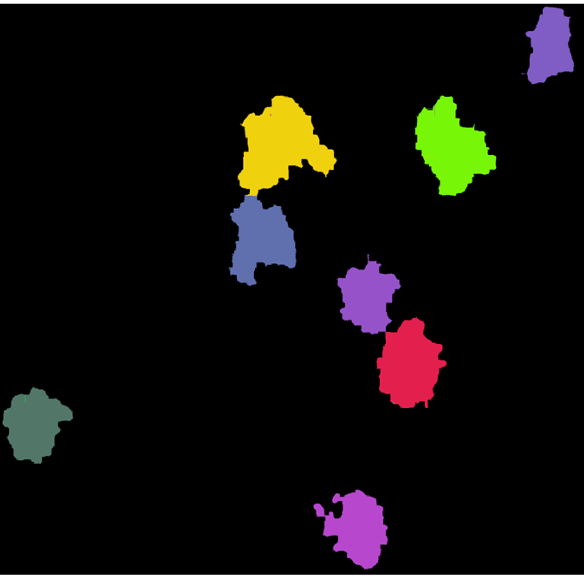
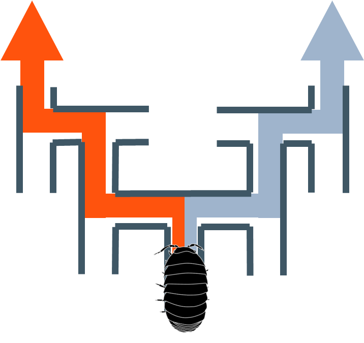

Yasuhito Hayashi
Ph.D. in Science
(Biological Oceanography)
海洋には植物プランクトンや動物プランクトン、バクテリアなど生物由来の様々な小粒子が存在しています。 それらの粒子は、粒子同士の物理的な相互作用や生物による捕食・被捕食などによりサイズが大幅に変動し、有機物を含む大型化した粒子は深海へと沈降していきます。 この過程は地球規模の炭素循環に貢献しており、同時に深海生物にとっての貴重な有機物源となっています。 私はこの、微小な生物が全球的な炭素動態へ大きく影響を与える過程を解き明かすため、室内実験や新しい光学手法を用いて研究を行っています。
News
- Apr 2024: I started my research career at the JAMTEC.
- Aug 2023: Cohesive bond strength of marine aggregates and its role in fragmentation was published in Frontiers in Marine Science.
Publications
-

Frontiers in Marine Science 10, 1167169.
-
Journal of Oceanography 76, 317-326.
-

Tsukuba J Biol 12, TJB201307YH.
Presentations
- Shigeki Wada, Yasuhito Hayashi, Yuko Omori, Measurement of glycans in marine environment, Glyco-core Symposium 2024, July 16, 2024.
- Spatafora, Hayashi et al., Potential adaptation and acclimatization to ocean warming and acidification in the neon damselfish Pomacentrus coelestis: moving from molecular mechanisms to organismal physiology and behaviour, APCRS 2023: Online, Jun 19, 2023.
- 林 靖人, 和田 茂樹, 海洋の凝集体サイズを左右する、粒度特性と海洋の流れについて, March 24, 2022.
- Yasuhito Hayashi, Shigeki Wada, Yasuhisa Adachi, A size restriction of marine flocs by the fluid shear stress, TGSW 2021: Online, Sep 9, 2021.
- Yasuhito Hayashi, Shigeki Wada, Yasuhisa Adachi, Cohesive strength of marine organic aggregates, ASLO 2021: Online, Jun 24, 2021.
- 林 靖人, 和田 茂樹, 足立 泰久, プランクトン由来凝集体の粒子間接着力の測定と粒子サイズ変動への影響, 海洋生物シンポジウム2021, Mar 20, 2021.
- 林 靖人, 和田 茂樹, 足立 泰久, Breakup of marine aggregates under laminar shear flow, JpGU-AGU Joint Meeting 2020: Online, Jul 13, 2020.
Grants
- 日本沿岸域学会 令和 6 年度研究グループ助成金, 30 万円, 2024 年 6 月-2025 年 6 月
- 科研費, 研究課題/領域番号 21J20420, 研究費総額 220 万円, 2021 年 4 月-2024 年 3 月
- 2019 年度笹川科学研究助成, 研究番号 2019-6044, 研究費総額 77 万円, 2019 年 4 月-2020 年 3 月
- 2017 年度筑波大学先導的研究者体験プログラム, 研究費総額 7 万円, 2017 年 4 月-2020 年 3 月
- 2015 年度筑波大学先導的研究者体験プログラム, 研究費総額 10 万円, 2015 年 4 月-2015 年 3 月